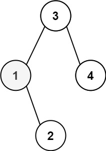
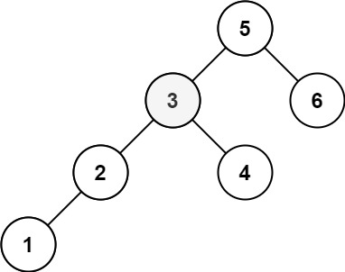

books / hot100 / 03-题解 / 08-二叉树
230. 二叉搜索树中第 K 小的元素
题目与约束
给定一个二叉搜索树的根节点 root ，和一个整数 k ，请你设计一个算法查找其中第 k小的元素（k 从 1 开始计数）。
示例 1：

输入：root = [3,1,4,null,2], k = 1
输出：1
示例 2：

输入：root = [5,3,6,2,4,null,null,1], k = 3
输出：3
提示：
- 树中的节点数为
n。 1 <= k <= n <= 1040 <= Node.val <= 104
进阶：如果二叉搜索树经常被修改（插入/删除操作）并且你需要频繁地查找第 k 小的值，你将如何优化算法？
核心不变量
BST 中序序列严格递增。
完整推导
思路推导
-
直觉与痛点（暴力解法）：
最容易想到的办法是：管它是什么树，直接用一个大数组把整棵树的所有节点值都装进去，然后用
Collections.sort()排个序，最后返回array[k-1]。痛点：空间复杂度变成了 O(N)，且完全浪费了二叉搜索树自带的有序性。这种没有技术含量的解法在面试中只能拿安慰分。
-
破局思路（中序压路机 + 计数器提前止损）：
再次请出我们的终极定理：二叉搜索树的中序遍历（左 -> 中 -> 右）结果，天然就是一个严格递增的有序序列。
所以，“找第 k 小的元素”，本质上就是当中序遍历的压路机开过去时，数一数它是第几个被压到的节点。
- 我们不需要把所有数字存下来。
- 我们只需要在外面挂一个计数器
count = 0。 - 每次中序遍历走到“中”（即处理当前节点）的时候，让
count++。 - 当发现
count == k时，说明当前节点就是我们要找的真命天子！立刻记录答案，并果断终止后续的所有遍历（提前止损）。
Java 实现（满分全局变量递归版）
C++ 实现
实现来源：经典解法实现
- BST 中序遍历天然升序
- 中序访问到第 k 个元素即为答案
- 递归左 → 计数 → 右，计数到 k 提前终止
class Solution { int count = 0, answer = 0, k = 0; public: void go(TreeNode* node) { if (!node || answer) return; go(node->left); if (++count == k) { answer = node->val; return; } go(node->right); } int kthSmallest(TreeNode* root, int k) { this->k = k; go(root); return answer; } };Python 实现
实现来源：经典解法实现
- BST 中序遍历天然升序
- 中序访问到第 k 个元素即为答案
- 递归左 → 计数 → 右，计数到 k 提前终止
class Solution: def kthSmallest(self, root: TreeNode, k: int) -> int: self.count, self.k, self.answer = 0, k, None def go(node): if not node or self.answer is not None: return go(node.left) self.count += 1 if self.count == self.k: self.answer = node.val return go(node.right) go(root) return self.answerGo 实现
实现来源：经典解法实现
- BST 中序遍历天然升序
- 中序访问到第 k 个元素即为答案
- 递归左 → 计数 → 右，计数到 k 提前终止
func kthSmallest(root *TreeNode, k int) int { count, answer := 0, 0 var go func(node *TreeNode) go = func(node *TreeNode) { if node == nil || answer != 0 { return } go(node.Left) count++ if count == k { answer = node.Val; return } go(node.Right) } go(root) return answer }C 实现
实现来源：经典解法实现
- BST 中序遍历天然升序
- 中序访问到第 k 个元素即为答案
- 递归左 → 计数 → 右，计数到 k 提前终止
int count = 0, answer = 0, target = 0; void go(struct TreeNode* node) { if (!node || answer) return; go(node->left); if (++count == target) { answer = node->val; return; } go(node->right); } int kthSmallest(struct TreeNode* root, int k) { count = 0; answer = 0; target = k; go(root); return answer; }
/**
* Definition for a binary tree node.
* public class TreeNode {
* int val;
* TreeNode left;
* TreeNode right;
* TreeNode() {}
* TreeNode(int val) { this.val = val; }
* TreeNode(int val, TreeNode left, TreeNode right) {
* this.val = val;
* this.left = left;
* this.right = right;
* }
* }
*/
class Solution {
// 全局计数器：记录当前是第几小的元素
private int count = 0;
// 全局结果：用来存放最终找到的第 k 小的值
private int result = -1;
public int kthSmallest(TreeNode root, int k) {
traverse(root, k);
return result;
}
// 经典中序遍历：左 -> 中 -> 右
private void traverse(TreeNode root, int k) {
// 🌟 核心优化（提前止损）：如果当前节点为空，或者我们已经找到答案了，直接返回，不再浪费算力！
if (root == null || result != -1) {
return;
}
// 1. 【左】先去左子树里找
traverse(root.left, k);
// 2. 【中】处理当前节点
count++; // 计数器加 1
if (count == k) {
result = root.val; // 找到了，把值存在结果里
return; // 触发上面的提前止损开关
}
// 3. 【右】再去右子树里找
traverse(root.right, k);
}
}
复杂度
- 时间复杂度：O(H + k)。其中 H 是树的高度。我们一路上需要先钻到最左下角的叶子节点（消耗 O(H) 的时间），然后往回走，访问 k 个节点就会触发提前终止。在平均情况下，时间复杂度大约是极速的 O(log N + k)。
- 空间复杂度：O(H)。消耗在系统递归调用栈上。完全没有使用额外的数组空间。
易错点与扩展（面试进阶拷问）
- 面试追问：“如果这棵二叉搜索树经常被修改（频繁执行插入、删除操作），并且你需要频繁地查找第 k 小的元素，你该怎么优化算法？”
- 普通回答：那每次修改后，我都重新跑一遍上面的中序遍历。
- 满分抢答（直击数据结构本质）：这属于力扣官方的“进阶问题”。如果频繁修改加查询，上面的方法每次都要重新遍历，效率太低。
- 终极优化方案：我们可以重构二叉树的节点结构，在每个
TreeNode里增加一个属性：size（以当前节点为根的子树的节点总总数）。 - 当我们查找第 k 小的元素时，由于我们知道左子树的节点个数leftSize：- 如果
k == leftSize + 1，说明根节点就是第 k 小的，直接 O(1) 返回。 - 如果
k <= leftSize，说明第 k 小的元素一定藏在左子树里，我们直接去左子树找。 - 如果
k > leftSize + 1，说明在左边不够，我们要去右子树里找第k - leftSize - 1小的元素。 - 结论：通过引入
size属性，每次查找的时间复杂度会瞬间从 O(N) 优化思路到 O(H)（即直接顺着树高一路劈下去，不需要任何中序遍历）。这就把问题完美转化为了红黑树底层的Rank（排名）问题！
- 如果